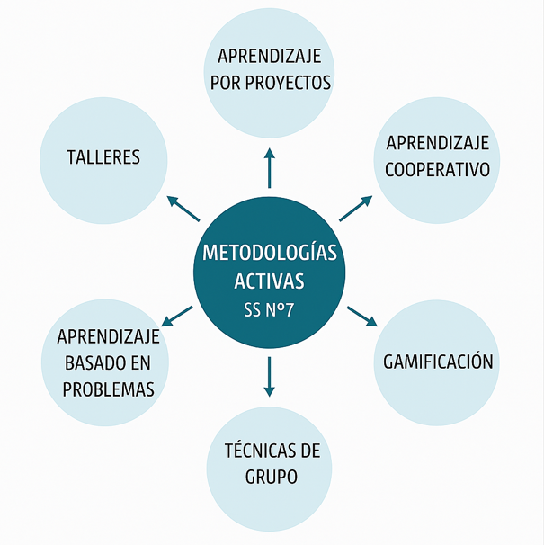

A partir del esquema presentado, las metodologías activas constituyen el eje central de mi práctica docente en 3.º de ESO, especialmente en un aula con alumnado con necesidades educativas y dificultades de aprendizaje. Estas metodologías sitúan al alumnado como protagonista de su propio proceso de aprendizaje, favoreciendo la motivación, la participación, la inclusión y el desarrollo de competencias clave, adaptándose mejor a los distintos ritmos y estilos de aprendizaje.
En este contexto, utilizar metodologías activas permite crear un entorno más accesible, significativo y flexible, donde el alumnado aprende haciendo, experimentando y colaborando, aumentando su implicación y mejorando su autoestima académica.
Aprendizaje por proyectos: Consiste en trabajar a partir de proyectos cercanos a la realidad del alumnado. Lo utilizo porque favorece un aprendizaje globalizado y significativo, permite integrar diferentes contenidos y facilita que cada alumno participe según sus capacidades, promoviendo la autonomía y el trabajo competencial.
Aprendizaje cooperativo: Se basa en el trabajo en pequeños grupos heterogéneos. Lo utilizo para fomentar la ayuda mutua, la inclusión y la mejora de las habilidades sociales. Es especialmente positivo para el alumnado con necesidades educativas, ya que se apoya en el grupo y aprende con y de los demás.
Aprendizaje basado en problemas: Plantea situaciones problemáticas reales que el alumnado debe resolver. Esta metodología desarrolla el pensamiento crítico, la toma de decisiones y la aplicación práctica de los contenidos, permitiendo que el alumnado comprenda mejor lo que aprende y para qué sirve.
Gamificación: Introduce elementos del juego en el aula (retos, puntos, recompensas). La utilizo porque incrementa notablemente la motivación, reduce la ansiedad ante el error y favorece la participación activa, especialmente en alumnado con dificultades de aprendizaje.
Técnicas de grupo: Incluyen dinámicas como debates, lluvias de ideas o roles asignados. Las uso para mejorar la comunicación, la interacción social y la implicación activa, creando un clima de aula positivo y participativo.
